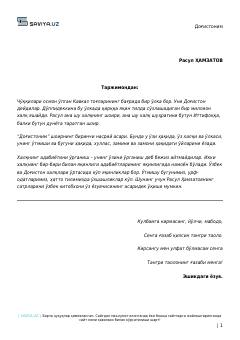

DRasul Hamzatovning o'z xalqi va o'lkasi haqidagi ta'sirli nasriy asari.
Ushbu asar mashhur dog'istonlik shoir Rasul Hamzatovning birinchi nasriy kitobi bo'lib, unda muallif o'z xalqi, o'lkasi, tarixi va bugungi kuni haqidagi o'ylarini bayon etadi. Kitobda Dog'iston va o'zbek xalqlari o'rtasidagi madaniy va ma'naviy yaqinliklar, urf-odatlar hamda hayotiy falsafalar badiiy tilda yoritilgan.